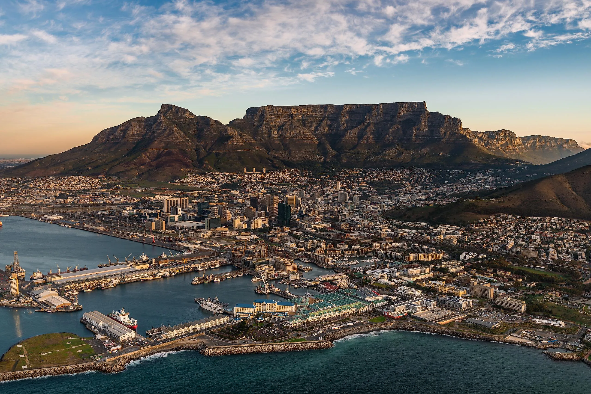
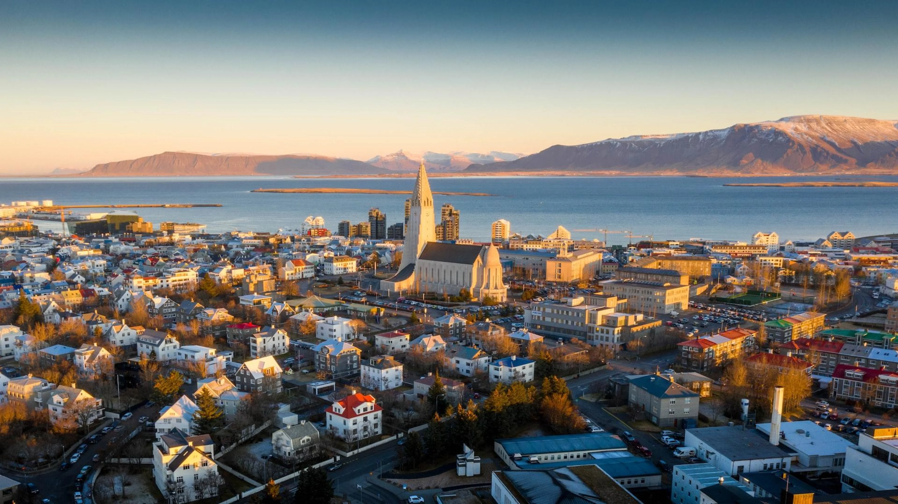
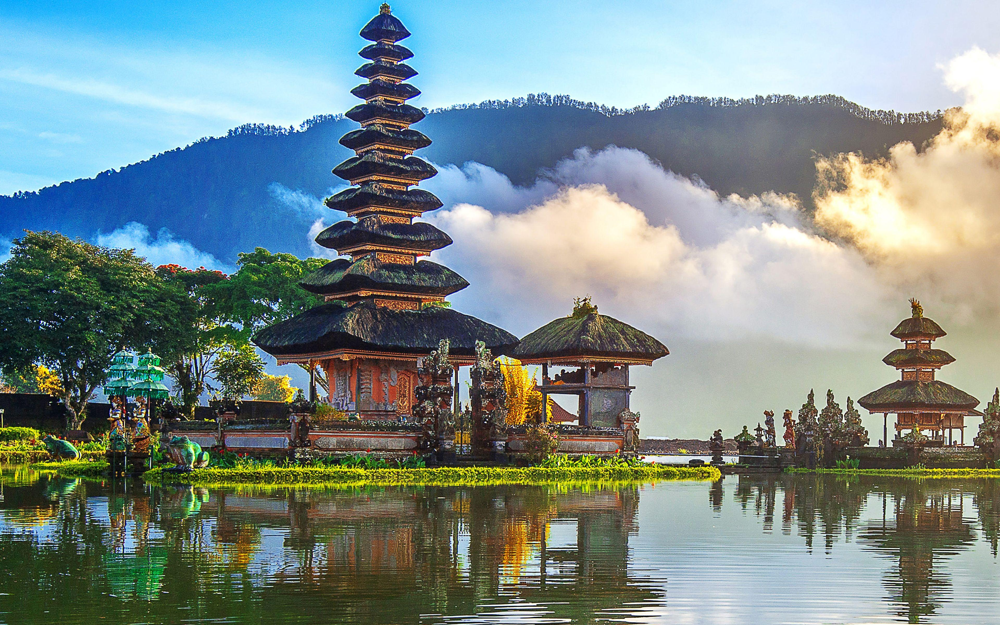
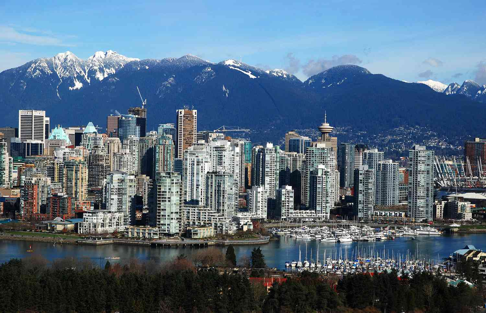

1. Santorin – Griechenlands blaue Träume

Weiße Häuser mit blauen Kuppeln, spektakuläre Sonnenuntergänge über der Ägäis und charmante Gassen machen Santorin zu einem der romantischsten Orte Europas. Ideal für Paare und Fotografen.
Unsere Reiseziele führen dich zu den schönsten Orten der Erde – von exotischen Inseln bis zu pulsierenden Metropolen. Jedes Ziel bietet einzigartige Erlebnisse, kulturelle Highlights und unvergessliche Momente.
Weiße Häuser mit blauen Kuppeln, spektakuläre Sonnenuntergänge über der Ägäis und charmante Gassen machen Santorin zu einem der romantischsten Orte Europas. Ideal für Paare und Fotografen.

Tempel, Schreine und traditionelle Teehäuser prägen das Bild dieser Stadt. Im Frühling verwandeln Kirschblüten Kyoto in ein rosa Meer – ein Fest für alle Sinne.

Kapstadt begeistert mit seiner Lage zwischen Ozean und Gebirge. Der Tafelberg bietet atemberaubende Ausblicke, während die Waterfront mit Musik und Lebensfreude lockt.

Die Hauptstadt Islands ist Ausgangspunkt für spektakuläre Naturerlebnisse: Geysire, Wasserfälle und Polarlichter. Ein Paradies für Abenteuerlustige und Fotografen.

Grüne Reisterrassen, Tempel voller Mystik und traumhafte Strände – Bali vereint Spiritualität und Natur. Ideal für Yoga‑Reisen und Erholungssuchende.

Zwischen Pazifik und Bergen liegt eine der lebenswertesten Städte der Welt. Hier kannst du morgens Ski fahren und nachmittags am Strand spazieren gehen.